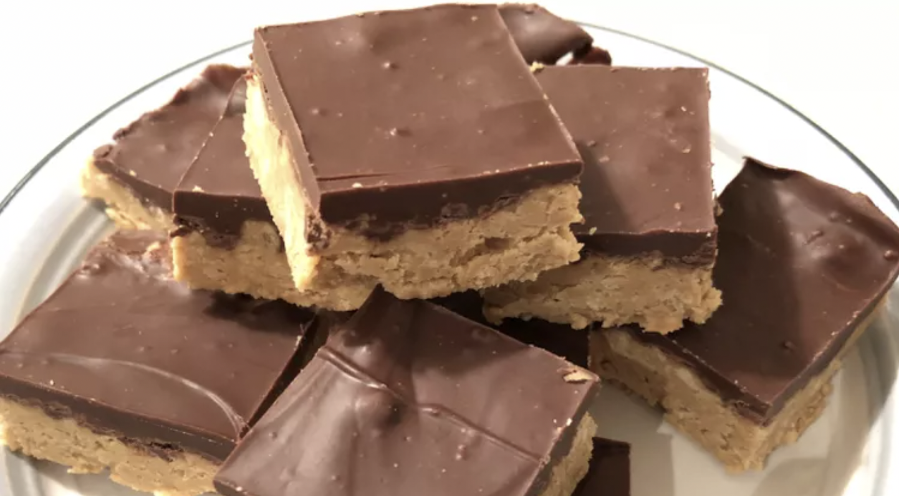

Peanut Butter Bars
 12
servings
12
servings 1
hour 25 minutes
1
hour 25 minutes Source
Source Sweet
Sweet
Bars that taste like Reeses PB Cups!

2 cupsgraham cracker crumbs2 cupsconfectioners’ sugar1 cupbutter or margarine, melted1 cuppeanut butter4 tbspeanut butter1 ½ cupssemisweet chocolate chips
Ingredients
2 cupsgraham cracker crumbs2 cupsconfectioners’ sugar1 cupbutter or margarine, melted1 cuppeanut butter
Mix together graham cracker crumbs, confectioners’ sugar, butter or margarine, and
1 cuppeanut butter in a medium bowl until well-blended. Press evenly into the bottom of an ungreased 9x13-inch pan.
1 ½ cupssemisweet chocolate chips4 tbspeanut butter
Place chocolate chips and
4 tablespoonspeanut butter in a microwave-safe bowl. Microwave on high, stirring every15 seconds, until smooth. Spread mixture over crust.
Refrigerate for at least 1 hour before cutting into 12 squares.